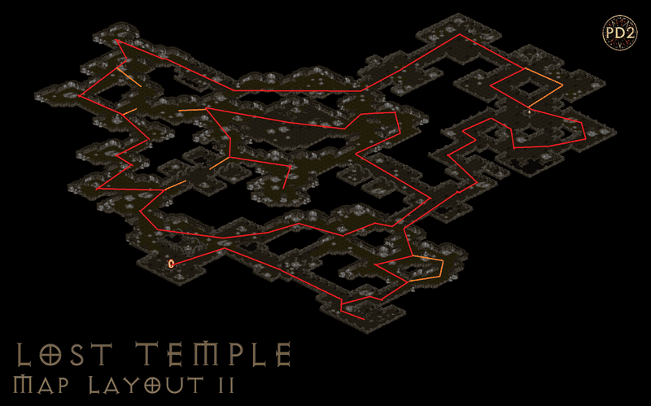
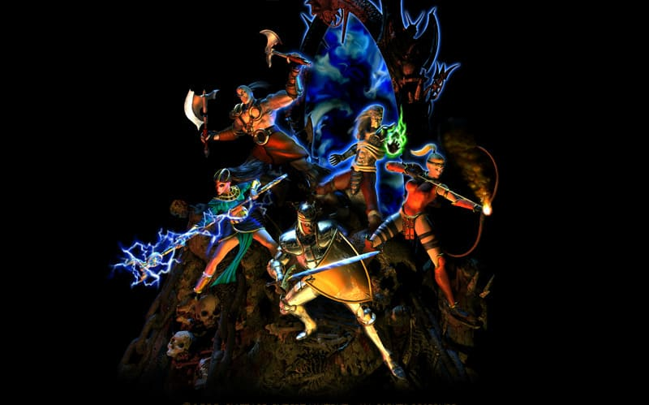

Hiim 99 Race Records


Group Tier List
Crafting a synergized team takes a lot of planning. This has a break-down for Public games, physical, or elemental groups.
ViewExternal Resources
Map Damage Calculator
This is a great tool to calculate how many hits it takes to defeat mobs. Takes damage types, player counts, resistances, and even pierce into account.
VisitCorrupted Zone Tracker
Zone rotation is programmatic. Tools exist so you can see when your favorite zone will re-appear.
VisitHiim Filter Github
If you are a HiimFilter user, please use it from the launcher to stay up to date.
VisitPd2 trade
PD2 Trader is a desktop app designed for Project Diablo 2 players. It helps you quickly check item prices and list items for trade.
Visit